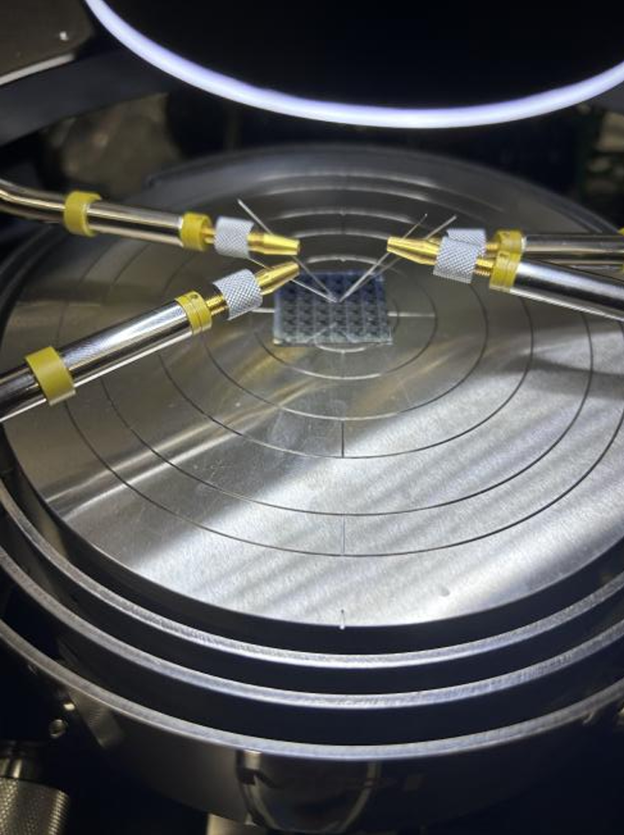

Silicon Device Fabrication & Electrical Characterization
Overview
We fabricated resistors, diodes, MOSCAPs, and MOSFETs side-by-side on n- and p-type silicon dies from a shared Holberg mask set, then probed the finished devices on a manual wafer-probe station for electrical testing. I wrote up the full characterization report, extracting and analyzing the I-V/C-V data across all four device types below.
- Extracted sheet resistance, contact resistance, and doping concentration from resistor and diode I-V/C-V sweeps.
- Pulled threshold voltage, flat-band voltage, and oxide thickness from MOSCAP C-V curves.
- Characterized MOSFET ID-VD/ID-VG families and transconductance across long-channel, short-channel, and thick-oxide device types.
- Traced non-ideal electrical signatures (nonlinear resistor I-V, C-V dips, flat MOSCAP response) back to specific likely process causes — incomplete oxide formation, lithography misalignment, guard-ring shorts — rather than treating failed devices as unexplained.

Full characterization report (PDF) — group write-up covering all four device types.